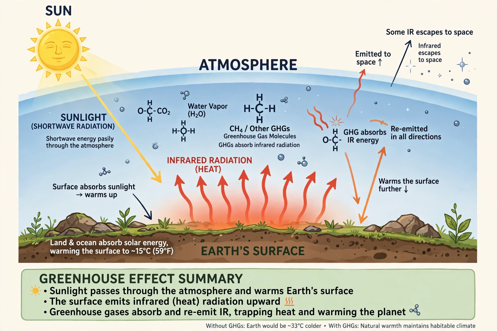

Greenhouse effect

The greenhouse effect is the process by which gases in a planet's atmosphere absorb and re-emit infrared radiation, warming the planet's surface beyond what it would be from sunlight alone. On Earth the natural greenhouse effect raises the average surface temperature by about 33 °C, from roughly −18 °C to about 15 °C, making the planet habitable.
Since the Industrial Revolution, human activity has strengthened the effect by increasing concentrations of greenhouse gases such as carbon dioxide, methane and nitrous oxide, producing Global warming and wider Climate change.
Mechanism
Sunlight passes through the atmosphere and warms the surface, which re-radiates the energy as infrared (heat) radiation. Greenhouse gas molecules absorb infrared at particular wavelengths and re-emit it in all directions, including back toward the surface. The atmosphere thus acts partly like the glass of a greenhouse, though the physical mechanism differs: a real greenhouse warms mainly by suppressing convection, while the atmospheric effect is radiative.
Water vapour is the most abundant greenhouse gas and acts largely as a feedback that amplifies warming initiated by other causes, because warmer air can hold more of it. Carbon dioxide is the most important long-lived gas whose concentration humans directly control.
History of the science
Joseph Fourier described the atmosphere's insulating role in the 1820s. John Tyndall measured the infrared absorption of water vapour, carbon dioxide and other gases in 1859. In 1896 Svante Arrhenius calculated that halving or doubling atmospheric carbon dioxide would change global temperature by several degrees.
Guy Stewart Callendar linked rising carbon dioxide to observed warming in 1938. From 1958, Charles David Keeling's measurements at Mauna Loa produced the Keeling Curve, the long record of steadily rising atmospheric carbon dioxide that underpins modern climate science.
Greenhouse gases
The main long-lived greenhouse gases are carbon dioxide (CO₂), methane (CH₄), nitrous oxide (N₂O) and fluorinated gases; tropospheric ozone and water vapour also contribute. Their warming potency and atmospheric lifetimes differ widely: methane is far more potent per molecule than carbon dioxide but persists only about a decade, while some fluorinated gases persist for millennia. See Greenhouse gas.
On other planets
Venus exhibits a runaway greenhouse effect: its dense carbon dioxide atmosphere produces surface temperatures around 460 °C. Mars, with a very thin atmosphere, has only a small greenhouse effect. Study of these neighbours helped scientists understand the physics operating on Earth.
See also: Greenhouse gas · Global warming · Climate change · Carbon cycle · Radiative forcing